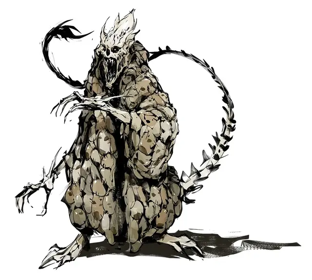

Великий мастер монастыря Страдающего тела
Monastery of the Distressed Body Grand Master
Большое Исчадие (Дьявол), законно-злое, именной НИП

Класс Доспеха 19 (природный доспех)
Хиты 142 (15к10 + 60)
Скорость 40 футов, летая 40 футов
| мод | спас | ||
|---|---|---|---|
| СИЛ | 18 | +4 | +4 |
| ЛОВ | 16 | +3 | +3 |
| ТЕЛ | 18 | +4 | +4 |
| мод | спас | ||
|---|---|---|---|
| ИНТ | 13 | +1 | +5 |
| МДР | 14 | +2 | +6 |
| ХАР | 16 | +3 | +6 |
Навыки Обман +7, Проницательность +6
Сопротивление урону холод; дробящий, колющий, рубящий от немагических атак, кроме нанесённых посеребрённым оружием
Иммунитет к урону огонь, яд
Иммунитет к состояниям отравление
Чувства тёмное зрение 120 футов, пассивное Восприятие 12
Языки Инфернальный, Телепатия 120 фт.
Опасность 9 (5000 опыта)
Бонус мастерства +4
Особенности
Дьявольское зрение. Магическая тьма не мешает темному зрению дьявола.
Сопротивление магии. Дьявол совершает с преимуществом спасброски от заклинаний и прочих магических эффектов.
Осколки меча головоруба. Осколки меча головоруба [vorpal sword], однажды сломанные о дьявола, заменяют его когти. Успешная проверка Интеллекта (Магия) или Мудрости (Восприятие) Сл 12 определяют их как таковые. Когда дьявол выбрасывает "20" на броске атаки Когтем, цель обезглавливается. (По вашему выбору, атака может нанести дополнительный рубящий урон в размере 6к8). Существо обладает иммунитетом к этому эффекту, если обладает иммунитетом к рубящему урону, не имеет головы или не нуждается в ней, обладает легендарными действиями или если вы решите, что цель слишком велика, чтобы ее голову можно было отрубить Когтями дьявола. При удалении осколки теряют свою магическую силу.
Браслеты телепортации. Браслеты телепортации надеты на руки и хвост дьявола. Эти устройства позволяют мастеру наносить удары Когтями и Жалом дистанционно, хотя они все еще совершаются в ход дьявола и используют его действия.
Устройства телепортации. Устройства телепортации - одна из самых впечатляющих частей технологии разбившегося планетарного корабля, состоящая из двух скрепленных магическо-механических колец. Оба кольца передают энергию телепортации и полета, и первоначально использовались для проведения ремонтных работ снаружи корабля, работы с опасными веществами на расстоянии и т. д.
Когда существо просовывает руку или другую конечность в одно кольцо, эта конечность появляется из другого кольца, независимо от того, насколько далеко друг от друга находятся устройства. Второе устройство имеет скорость полета 40 футов и может летать дистанционно под контролем существа частью его собственного движения. Удаленное устройство также наделяет существо сенсорным восприятием окружающего пространства. Это позволяет использовать конечность как обычно, так что существо может выполнять любые действия на расстоянии, которые оно могло бы делать вблизи, включая проверки физических характеристик и атаки.
Поскольку они связаны с пространством корабля, устройства телепортации действуют только в монастыре и в Даойн Глойн (где Квалиш использовал магико-механическую технологию ремесла для организации своей новой лаборатории). Если персонажам удастся заполучить пару таких устройств, вы можете позволить игрокам придумать новые способы их использования в этих местах (назначив соответствующие проверки Интеллекта, если хотите усложнить процесс). Однако они не могут быть использованы как сокровища.
Действия
Мультиатака. Дьявол совершает три атаки: две когтями, и одну жалом.
Коготь. Рукопашная атака оружием: +8 к попаданию, досягаемость 10 футов, одна цель. Попадание: Рубящий урон 8 (1к8 + 4).
Жало. Рукопашная атака оружием: +8 к попаданию, досягаемость 10 футов, одна цель. Попадание: Колющий урон 13 (2к8 + 4) плюс урон ядом 17 (5к6), и цель должна преуспеть в спасброске Телосложения Сл 14, иначе станет отравленной на 1 минуту. Цель может повторять этот спасбросок в конце каждого своего хода, оканчивая эффект на себе при успехе.
Описание
По мере того как персонажи приближаются к Великому Мастеру, каждый может увидеть, что ужасный кожаный плащ дьявола сделан из лиц монахов и заключенных, с которых содрали кожу, а плоть превратили в кожу и грубо сшили вместе. Скипетр и корона, которые он носит, выглядят почти механическими и изготовлены из переработанных магико-механических деталей планарного корабля. Руки и хвост дьявола опоясывают большие кольца, изготовленные, по-видимому, таким же образом.
Костяной дьявол - высокомерный дебошир, который предполагает, что персонажи пришли присоединиться к его культу. Однако он также производит впечатление плаксивого и раздражительного существа, полагающегося на защиту своих телохранителей, а не на какие-либо физические угрозы. Если его спросят о Квалише, Великий мастер с удовольствием расскажет, как он захватил плавучий остров и перенес Квалиша в другое место — в какой-то затерянный город, расположенный дальше в Барьерных пиках.